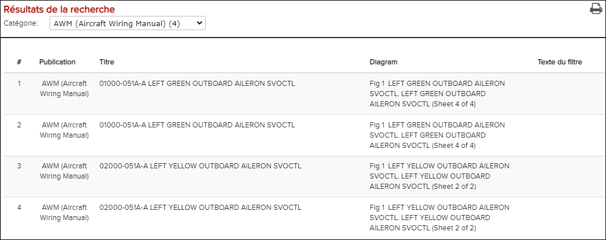
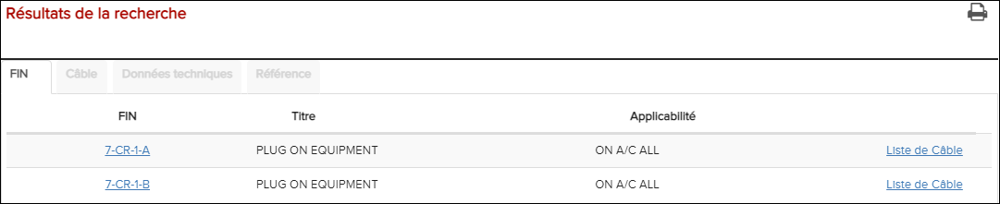

Remarque : La page Recherche sur FIN/Zone/Panneau est disponible seulement pour
les données A350 S1000D.
Remarque : L’option de recherche FIN n’est disponible dans la barre de recherche de la
barre d’en-tête que lorsque vous sélectionnez une option manuelle. cela permet
des recherches FIN.
Le texte de substitution dans la zone de recherche correspond au type de recherche que vous effectuez actuellement. Par exemple, si vous recherchez une bibliothèque, le texte "Rechercher dans la bibliothèque" apparaît dans la barre de recherche.

Page de recherche FIN / Zone / Panneau
Ces étapes sont basées sur la fenêtre Recherche sur la fenêtre.
-
Si, vous avez sélectionné TOUT, la catégorie et le
numéro d'occurrence sont d'abord présentés dans la boîte de dialogue
Sélectionner une catégorie.

-
Les résultats de la recherche sont présentés ci-dessous:

Les résultats de la recherche
Il montre les résultats de la recherche de liste de câbles. Vous pouvez naviguer dans les résultats de recherche en cliquant sur les entrées. La façon dont les résultats de la recherche se comportent quand ils sont ouverts dépend de la catégorie:À partir de l'espace Résultats de la recherche, cliquez sur l'icône- AIPC: Permet de présenter un document dans le nouvel onglet AIPC dans la fenêtre Contenu.
- AMM: Permet de présenter un document dans le nouvel onglet MSA dans la fenêtre Contenu.
- ASM: Permet de présenter les dessins / les schémas dans la fenêtre Graphique.
- AWM: Permet de présenter les schémas de câblage dans la fenêtre
Graphique. Pour l’A350, les résultats de la recherche FIN
montrent une publication titre dans la colonne de publication. Voir
les résultats de la recherche ci-dessous:

Résultats de la recherche FIN avec le titre de la publication
- TSM: Permet de présenter un document dans le nouvel onglet TSM dans la fenêtre Contenu.
- CB List: Les résultats de votre recherche sont présentés dans un onglet C/B avec une liste de FINs et leurs titres. Lorsqu'un champ FIN est sélectionné dans la liste, les informations de la FIN sont présentées dans l'onglet Donnée Technique.
- Liste de FIN: Les résultats de votre recherche sont présentés dans un onglet FIN avec la liste de FINs et leurs titres. Lorsqu'un champ FIN est sélectionné dans la liste, ses informations sont présentées dans l'onglet Donnée Technique.
- Liste de panneau: Les résultats de votre recherche sont présentés dans l'onglet Panneau avec la table des numéros de panneau dans des colonnes indiquant le type, l'access à, l'access à FIN, Zone et l'applicabilité. Lorsqu'une rangée de panneaux est sélectionnée, les informations du panneau sont présentées dans l'onglet Donnée Technique. Si vous cliquez sur le numéro de “Zone”, une fenêtre pop up apparaît avec les informations de la zone sélectionnée.
- Liste de câbles: Les résultats de votre recherche sont présentés
dans l'onglet FIN avec la liste de FINs et leurs titres.
Lorsqu'un champ FIN est sélectionné dans la liste, les informations
sur le câblage associé au champ FIN sont présentées dans l'onglet
Câblage. Notez que le champ FIN que vous avez sélectionné
sera en gras pour l’identifier plus facilement dans l'onglet
Câblage. Vous pouvez encore sélectionner une ligne dans l'onglet
Câblage pour afficher des informations détaillées sur le
câble dans l'onglet Donnée Technique. Dans les résultats de
la recherche FIN, il y a des fils connectés à la FIN, tels qu'une
fiche. Il devrait y avoir un lien appelé "Liste de fils" sur lequel
on peut cliquer pour afficher une liste de fils pour cette FIN. Voir
les résultats de recherche ci-dessous:

Résultats de la recherche FIN avec liste de fils
- Liste de zones: Les résultats de la recherche sont présentés dans un
onglet Zone avec un tableau des numéros de
zones avec des colonnes indiquant la désignation, l’applicabilité et
des liens vers les listes correspondantes. Pour chaque entrée de
ligne, vous avez les options suivantes:
- Pour afficher des informations sur la zone dans l’onglet Données techniques, cliquez n’importe où dans la ligne qui n’a pas été ajouté. avoir un hyperlien. Ensuite, vous pouvez ouvrir les illustrations de zonage associées en cliquant sur les liens dans la REF. FIGURE colonne de l'onglet Données techniques.
- Pour ouvrir l’onglet Liste FIN avec une liste de toutes les FIN de la zone, cliquez sur le lien Liste FIN de la ligne.
- Pour ouvrir l’onglet Liste des panneaux avec une liste de tous les panneaux de la zone, cliquez sur le lien Liste des panneaux de la ligne.
- Pour ouvrir l’onglet Liste des fils
avec une liste de tous les fils de la zone, cliquez sur le
lien Liste des fils de la ligne. La
première colonne de l'onglet Liste des
fils est le numéro du fil suivi des détails
du connecteur. Lorsque vous cliquez sur un numéro de fil,
Détails du fil apparaît. Lorsque vous cliquez sur un lien de
recherche de fil, le numéro de fil correspondant s'ouvre
dans la recherche de câblage.Remarque : Quand vous effectuez une recherche en utilisant la catégorie "Tout", vous pouvez changer facilement la catégorie grâce à la liste déroulante disponible dans l'en-tête des résultats de recherche.
 Imprimer les résultats de la recherche pour imprimer les
résultats de la recherche au format PDF.
Imprimer les résultats de la recherche pour imprimer les
résultats de la recherche au format PDF.